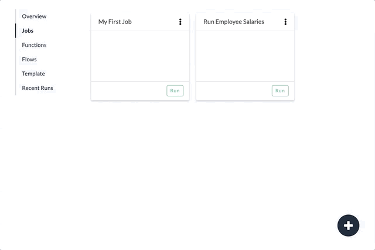

Run a Job
Running a Job executes the logic of functions and flows by reading data and writing results. Jobs that have no configuration errors can be run from the job list by clicking the Run button on the list item. Jobs can also be run from within the job editor. As the job runs, status information is updated in real time.
See also: Job Status, Recent Runs, Create a Job, Configure a Job